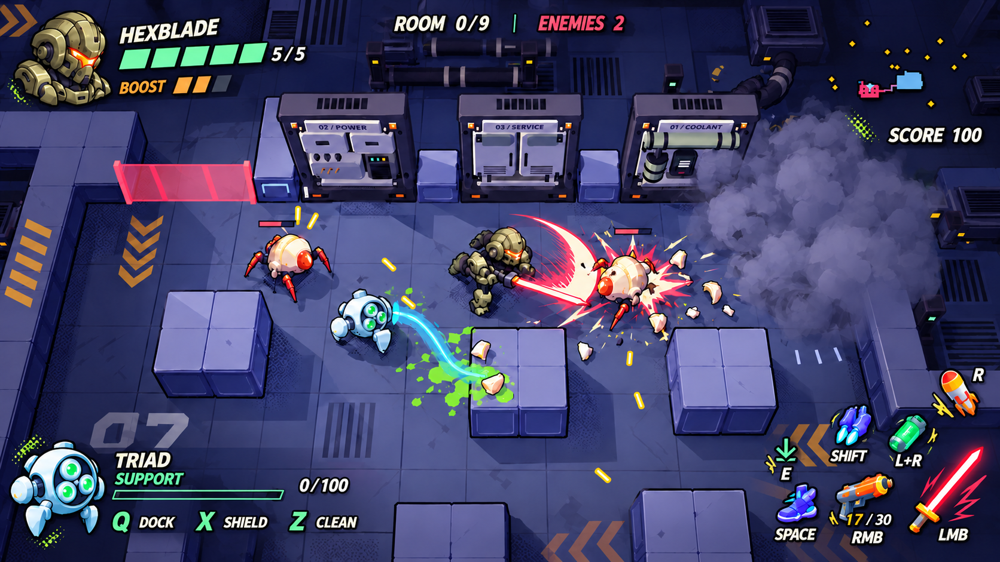
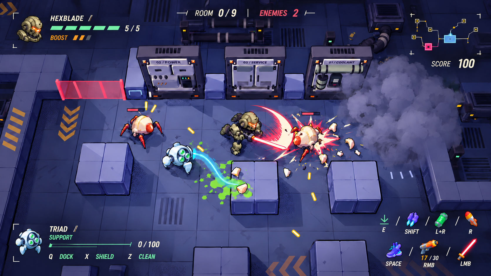
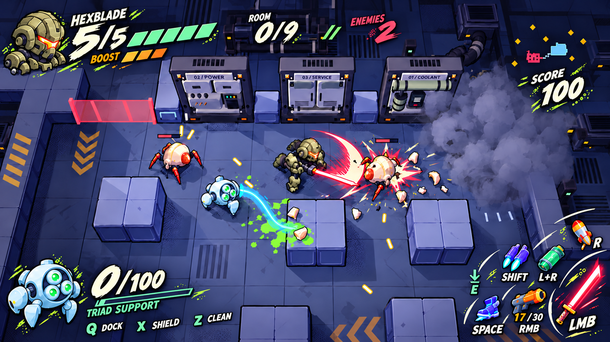

빽판 없이 아이콘·글자·게이지만 띄운 디자인 시안. 추천은 1안의 코믹 형태와 2안의 간결한 배치 조합.
굵은 외곽선과 독립 아이콘으로 원안의 코믹 느낌을 가장 가깝게 유지.

작은 초상과 얇은 선, 정렬된 스킬로 화면 여백을 확보.

큰 숫자와 브러시 글자, 열린 부채꼴 스킬 배치로 속도감을 강조.

내장 image_gen 제작 · 디자인 시안 · 게임 미적용